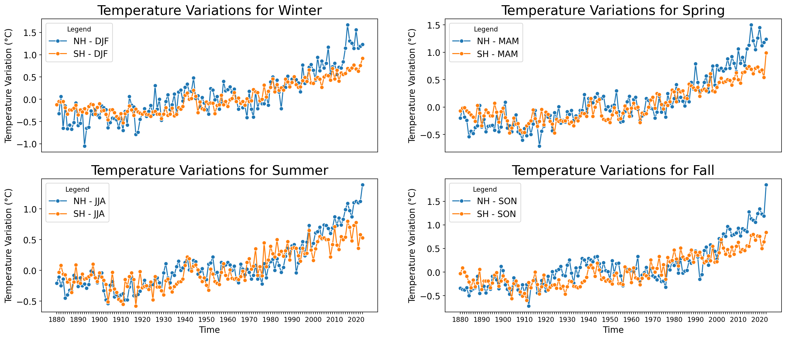

import pandas as pd
import matplotlib.pyplot as plt
import seaborn as sns
import joypy
from matplotlib import cm
zonann_temps = pd.read_csv('https://raw.githubusercontent.com/rfordatascience/tidytuesday/master/data/2023/2023-07-11/zonann_temps.csv')
# Step 1: Convert the DataFrame from wide to long format
data = pd.melt(zonann_temps, id_vars = ['Year', 'Glob'],
value_vars = ['EQU-24N', '24N-44N', '44N-64N', '64N-90N', '24S-EQU', '44S-24S', '64S-44S', '90S-64S'],
var_name = 'lat_range', value_name = 'temp_dev')
# Pivot the data for heatmap plotting, with Year on the x-axis and latitude ranges on the y-axis
heatmap_data_swapped_axes = data.pivot_table(index = "lat_range",columns= "Year",values = "temp_dev")Weather Gurus - Global Temperature Analysis
INFO 523 - Project 1
Abstract
The dataset is provided by NASA by combining land-surface, sea surface, and air temperature anomalies. The values in the dataset are deviations from the corresponding 1951-1980 means, indicating how much warmer or colder it is than normal for a particular place and time, and the normal means the average over the 30 years 1951-1980 for that place and time of year. More precisely, the base 1951-1980 mean is subtracted from the absolute temperature to get the anomaly.
The dataset contains four CSV files, providing temperature anomalies across different spatial and temporal scales for a long period from 1880 to 2022. We’ll analyze yearly temperature anomalies using the J-D column from global_temps.csv, nh_temps.csv, and sh_temps.csv datasets to assess global and hemispheric trends. Additionally, we’ll focus on seasonal anomalies, examining DJF and JJA for the Northern Hemisphere and their inverted counterparts for the Southern Hemisphere. To enrich our analysis, we’ll integrate 2023 temperature anomaly data from NASA’s GISS Surface Temperature Analysis, calculating both yearly and seasonal anomalies for that year.
Question 1: How have zonal annual temperatures changed over the years? Can we detect any latitudinal pattern? When was the hottest year on record?
Introduction: Introduction: We used variables inside the zonnan_temps.csv dataset. Initially, we transformed the data from a wide format to a long format by defining a new column called zones and merging all eight variables related to zones (i.e. 24N-44N, …) to that column. As we are focusing on annual zonal anomalies in this question, we can skip Glob, NHem, and SHem variables. Finally, we have a dataframe with three columns representing year, zone, and the last contains the anomalies. We created a time series for each zone to visualize the pattern of zonal annual temperature anomalies, emphasizing any noticeable trends or deviation from zonal long-term mean anomaly. We used heatmaps to illustrate how zonal annual temperature anomalies vary across countries and oceans, revealing which hemisphere exhibits more erratic behavior.
Approach: The approach for this analysis will involve two distinct methods: heatmap visualization and time series analysis. The heatmap provides an intuitive grasp of the data by color mapping the temperature anomalies across latitudinal zones over time. This method is suitable for spotting overall trends and outliers in a comprehensive visual format. For the time series analysis, we will examine the changes in global and hemispheric mean temperatures over time. This will involve plotting the data, with a particular emphasis on trend lines to discern long-term changes. The use of color mapping in the heatmap serves to quickly convey the magnitude of anomalies, while the time series plot with its trend line will enable us to evaluate the trajectory of temperature changes more formally.
Code Block 1: Load and preprocess the data
Code Block 2: Heatmap for visualizing temperature anomalies
# Define the specified order for latitude ranges
lat_range_order = ['64N-90N', '44N-64N', '24N-44N', 'EQU-24N', '24S-EQU', '44S-24S', '64S-44S', '90S-64S']
# Reorder the dataframe according to the specified latitude range order
heatmap_data_ordered = heatmap_data_swapped_axes.reindex(lat_range_order)
# Plot the heatmap
plt.figure(figsize = (12, 8))
sns.heatmap(heatmap_data_ordered, cmap = "coolwarm", linewidths = 0.1)
plt.title('Annual Temperature Annomalies Heatmap over each Latitude Range \nYears Colored in Red on the x Axis Show Reference Years')
plt.xlabel('Year')
plt.ylabel('Latitude Range')
# Set x-tick labels to appear every five years and color reference years in red
years = heatmap_data_ordered.columns.values
ticks = range(0, len(years), 5) # Show a tick every 5 years
plt.xticks(ticks, [years[i] for i in ticks], rotation = 45)
highlight_years = ['1950', '1955', '1960', '1965', '1970', '1975', '1980']
for label in plt.gca().get_xticklabels():
if label.get_text() in highlight_years:
label.set_color('red')
plt.show()Code Block 3: Ridgeplots of zonnal temperature annomalies
# Define the desired order for the latitude ranges
lat_order = ['64N-90N', '44N-64N', '24N-44N', 'EQU-24N', '24S-EQU', '44S-24S', '64S-44S', '90S-64S']
# Ensure that the 'lat_range' column is of categorical type and set the categories and their order
data['lat_range'] = pd.Categorical(data['lat_range'], categories=lat_order, ordered=True)
# Create the ridgeline plot with the specified order
fig, axes = joypy.joyplot(
data=data,
by='lat_range',
column='temp_dev',
colormap=cm.viridis,
figsize=(12, 8),
alpha=0.6,
linewidth=1
)
plt.title('Ridgeline Plot of Temperature Deviations by Latitude Range', fontsize=14, pad=0)
plt.xlabel('Temperature Annomaly')
plt.xlim(-3, 3)
plt.show()/Users/mohammad/anaconda3/envs/Pytorch/lib/python3.11/site-packages/joypy/joyplot.py:176: FutureWarning: The default of observed=False is deprecated and will be changed to True in a future version of pandas. Pass observed=False to retain current behavior or observed=True to adopt the future default and silence this warning.
grouped = data.groupby(by)Discussion: The heatmap visualizes temperature anomalies by latitude from 1880 to around 2020, with a clear shift from cool (blue) to warm (red) over time, indicating a long-term global warming trend. Latitudinal bands closer to the Arctic (64°N to 90°N) show more pronounced warming, a phenomenon known as polar amplification. Recent years across all latitudes are predominantly red, suggesting higher-than-average temperatures becoming the new normal. The reference years marked in red may denote the baseline for calculating anomalies, implying an increasing baseline temperature. Overall, the data illustrates the global extent of climate change, with the most significant changes occurring at the poles.
The heatmap visualization elucidates the distribution and intensity of temperature anomalies across different latitudinal ranges. Notably, there appears to be a concentration of higher anomalies (red tones) in the Northern Hemisphere, particularly in the higher latitudes. This could indicate a stronger warming trend in these areas, which is consistent with the current understanding of climate change where polar and high-latitude regions are warming faster than the global average.
Furthermore, the analysis of the global mean temperature anomalies over time reveals a clear upward trend, signifying an increase in global temperatures. This trend is likely influenced by anthropogenic factors, as suggested by the literature on global warming. The variations in anomalies also suggest periods of relative stability interspersed with rapid increases, potentially corresponding with known climatic events or changes in greenhouse gas emissions.
In conclusion, the data preprocessing and subsequent analysis have provided valuable insights into the historical patterns of temperature change. The evidence points to a planet that is experiencing significant warming, with pronounced effects at higher latitudes. Further investigation could focus on correlating these patterns with environmental and human activities to better understand the drivers behind these changes.
Question 2: How have the hemispheric seasonal (monthly) temperatures changed over the years? Can we detect any upward or downward trend in any seasons (months) and any of the hemispheres? Which seasons (months) show more erratic behavior?
Introduction: We will use nh_temps.csv and sh_temps.csv datasets. We should start by converting the dataset of each hemisphere to a long format by defining one new column for month (season) and one column that shows the hemispheres (NH and SH). Finally, we can merge the data frames vertically to arrive at a one comprehensive dataframe. We can compare the pattern of seasonal temperature anomalies over the Northern and Southern hemispheres separately and collectively. We can use time series, box plots, or histograms to illustrate and compare the time series and statistical distribution of seasonal temperature anomalies in the northern and southern hemispheres to discuss how different and similar they are. It may be interesting to create a similar visualization to the previous question with deviation from long-term anomalies. This would not only capture how seasonal temperatures have strayed from some long-term average, but how temperatures are fluctuating relative to even temporally local averages.
Approach: We’ll perform comparative analysis by comparing 2023 average temperature anomalies with historical peaks, both globally and hemispherically, while also scrutinizing seasonal variations to deepen our understanding.
Analysis:
import pandas as pd
import numpy as np
import seaborn as sns
import matplotlib.pyplot as plt
from matplotlib.ticker import MaxNLocatorNH = pd.read_csv('./data/nh_temps.csv')
SH = pd.read_csv('./data/sh_temps.csv')
# SH = SH.set_index('Year')
# NH = NH.set_index('Year')SH = SH.rename(columns={'DJF': "JJA", 'MAM': 'SON', 'JJA': "DJF", 'SON':'MAM' })
df_long = NH.melt(id_vars=['Year'], value_vars=['DJF', 'MAM', 'JJA', 'SON'], var_name='Season', value_name='Temperature')
df_long_SH = SH.melt(id_vars=['Year'], value_vars=['DJF', 'MAM', 'JJA', 'SON'], var_name='Season', value_name='Temperature')
df_long['Hemisphere'] = 'NH'
df_long_SH['Hemisphere'] = 'SH'
df_full = pd.concat([df_long, df_long_SH], ignore_index=True)
# Convert 'Year' into a string so we can concatenate it with 'Season' for a unique x-axis label
df_full['Year'] = df_full['Year'].astype(str)
df_full['Time'] = df_full['Year'] + " " + df_full['Season']
df_full['Hue'] = df_full['Hemisphere'] + ' - ' + df_full['Season']
nth_label = 10
season = ['DJF', 'MAM', 'JJA', 'SON']
season_name = ['Winter', 'Spring', 'Summer', 'Fall']
figg, ax = plt.subplots(nrows=2, ncols=2, figsize=(20, 8))
for u, i in enumerate(season):
sub_full = df_full[df_full['Season']==i]
plot = sns.lineplot(data=sub_full, x='Year', y='Temperature', hue='Hue', marker='o', ax=ax.flatten()[u])
# Setting the title and labels for the plot
ax.flatten()[u].set_title(f'Temperature Variations for {season_name[u]}', fontsize=20) # Adjust title font size as needed
# Increase font size for x label
ax.flatten()[u].set_ylabel('Temperature Variation (°C)', fontsize=13) # Increase font size for y label
ax.flatten()[u].tick_params(axis='y', labelsize=13)
if u <=1 :
ax.flatten()[u].set_xticks([])
ax.flatten()[u].get_xaxis().set_visible(False)
else :
ax.flatten()[u].set_xlabel('Time', fontsize=13)
# Change the x-tick labels to season names
ax.flatten()[u].legend(title='Legend', fontsize=13)
for index, label in enumerate(ax.flatten()[u].get_xticklabels()):
if index % nth_label != 0:
label.set_visible(False)
#figg.savefig('./images/timeseis.jpg',bbox_inches='tight')
figg, ax = plt.subplots(nrows=1, ncols=1, figsize=(20, 8))
plot = sns.boxplot(data=df_full, y='Temperature', x='Season', hue='Hemisphere', ax=ax)
# Setting the title and labels for the plot
ax.set_title('Temperature Variations in the Northern and Southern Hemispheres', fontsize=20) # Adjust title font size as needed
ax.set_xlabel('Season', fontsize=16) # Increase font size for x label
ax.set_ylabel('Temperature Variation (°C)', fontsize=16) # Increase font size for y label
# Change the x-tick labels to season names
ax.set_xticklabels(['Winter', 'Spring', 'Summer', 'Fall'])
# Increase font size of the tick labels
ax.tick_params(axis='x', labelsize=16)
ax.tick_params(axis='y', labelsize=16)
# Add a legend to distinguish the seasons and hemispheres, adjust font size as needed
ax.legend(title='Legend', fontsize=15)
# Optimize layout and show the plot
figg.tight_layout()
plt.show()
#figg.savefig('./images/boxplot.jpg',bbox_inches='tight')/var/folders/wr/323h4t5x63zbc0d1jr1l1nlm0000gn/T/ipykernel_91777/1802720549.py:58: UserWarning: set_ticklabels() should only be used with a fixed number of ticks, i.e. after set_ticks() or using a FixedLocator.
ax.set_xticklabels(['Winter', 'Spring', 'Summer', 'Fall'])
Discussion: Across all graphs, there’s a noticeable increase in temperature variation, particularly from around the 1970s onwards, reflecting a trend towards warming in both hemispheres. This warming trend appears more pronounced during the Winter and Spring seasons. The data indicates some volatility in temperature changes year on year, but the overall trajectory suggests a significant rise in global temperatures, consistent with patterns of climate change.
The boxplot summarizes temperature variations across seasons in the Northern and Southern Hemispheres, revealing subtle yet insightful differences. In the Northern Hemisphere, a greater variability in winter temperatures is apparent, suggested by longer whiskers and more outliers, likely influenced by its extensive landmass. Spring shows a slightly higher median temperature variation in the Northern Hemisphere, indicative of consistently warmer springs than in the Southern Hemisphere. Interestingly, during summer, the two hemispheres display nearly identical temperature variations, suggesting a universal pattern of summer temperature changes. Come fall, the Southern Hemisphere exhibits a slightly wider range of temperature variations, which could point towards a more dynamic climatic response during this season.
Overall, while median temperature variations are generally comparable between the hemispheres, the Northern Hemisphere tends to exhibit greater extremes, particularly in winter and spring, which can be attributed to its larger landmass and consequent continental climate influence.